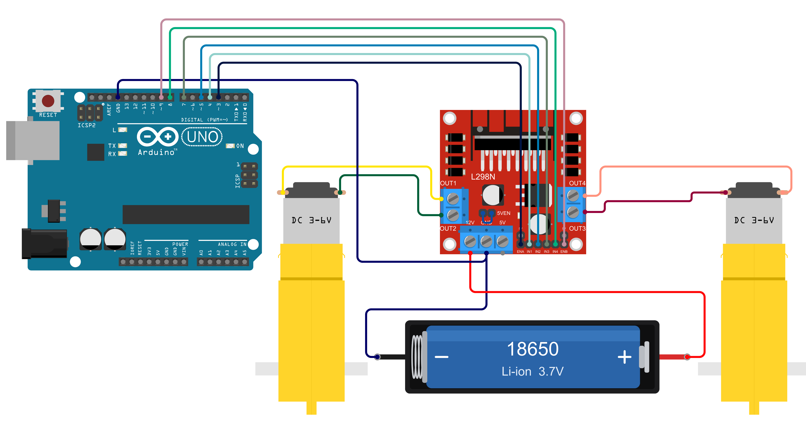

¿Qué problema resuelve este programa?
Este proyecto ofrece una interfaz gráfica intuitiva en Python conectada a una placa Arduino Uno R3, permitiéndote controlar dos motores independientes en tiempo real con clics y deslizadores.
Opciones
¿Qué puedes hacer con este sistema?
Controlar motores de corriente continua (DC) desde una computadora suele requerir escribir comandos manuales en monitores seriales o reprogramar el microcontrolador cada vez que se desea cambiar la velocidad o el sentido de giro.
Descarga el Manual de UsuarioControl independiente
Manejar el Motor 1 (Izquierdo) y el Motor 2 (Derecho) por separado.
Cambio de sentido instantáneo
Hacer girar cada motor hacia adelante, hacia atrás o detenerlo por completo.
Regulación precisa de velocidad
Ajustar la potencia mediante modulación por ancho de pulso (PWM) en un rango de 0 a 255.
Seguridad inmediata
Detener ambos motores al instante mediante un botón de Parada de Emergencia.
Código Fuente de Arduino
// ========================================================
// CÓDIGO ARDUINO CLÁSICO - CONTROL DE 2 MOTORES (L298N)
// ========================================================
// Definicion de pines para motor 1 Izquierdo
// ENA debe ir a un pin con capacidad PWM (~) para regular velocidad (0 -255)
const int ENA = 3;
const int IN1 = 4;
const int IN2 = 5;
// Definicion de pines para motor 2 Derecho
// ENB debe ir a un pin con capacidad PWM (~) para regular velocidad (0 -255)
const int ENB = 9;
const int IN3 = 7;
const int IN4 = 8;
void setup() {
// Reduce la latencia al seleccionar 115200 baudios
Serial.begin(115200);
pinMode(ENA, OUTPUT);
pinMode(IN1, OUTPUT);
pinMode(IN2, OUTPUT);
pinMode(ENB, OUTPUT);
pinMode(IN3, OUTPUT);
pinMode(IN4, OUTPUT);
// Evita arranques accidentales al energizar o reiniciar la placa
detenerTodo();
}
void loop() {
// Verificar si hay datos disponibles en el puerto serial
if (Serial.available() > 0) {
String comando = Serial.readStringUntil('\n');
comando.trim(); // Limpiar espacios o retornos de carro
procesarComando(comando);
}
}
void procesarComando(String cmd) {
// Comando general de parada de emergencia
if (cmd == "STOP") {
detenerTodo();
return;
}
// Estructura esperada: "Motor:Direccion:Velocidad" (ej. M1:F:200)
int primerSep = cmd.indexOf(':');
int segundoSep = cmd.lastIndexOf(':');
if (primerSep != -1 && segundoSep != -1 && primerSep != segundoSep) {
String motor = cmd.substring(0, primerSep);
String dir = cmd.substring(primerSep + 1, segundoSep);
int vel = cmd.substring(segundoSep + 1).toInt();
// Limitar la velocidad de forma segura entre 0 y 255
vel = constrain(vel, 0, 255);
if (motor == "M1") {
controlarMotor(ENA, IN1, IN2, dir, vel);
} else if (motor == "M2") {
controlarMotor(ENB, IN3, IN4, dir, vel);
}
}
}
void controlarMotor(int pinPWM, int pinA, int pinB, String dir, int velocidad) {
if (dir == "F") { // Adelante (Forward)
digitalWrite(pinA, HIGH);
digitalWrite(pinB, LOW);
analogWrite(pinPWM, velocidad); // PWM clásico de Arduino (0 - 255)
} else if (dir == "B") { // Atrás (Backward)
digitalWrite(pinA, LOW);
digitalWrite(pinB, HIGH);
analogWrite(pinPWM, velocidad);
} else { // Parada (Stop)
digitalWrite(pinA, LOW);
digitalWrite(pinB, LOW);
analogWrite(pinPWM, 0);
}
}
void detenerTodo() {
controlarMotor(ENA, IN1, IN2, "S", 0);
controlarMotor(ENB, IN3, IN4, "S", 0);
}Código Fuente de Python
import tkinter as tk
from tkinter import ttk, messagebox
import serial
import serial.tools.list_ports
class ControlMotoresTk:
def __init__(self, root):
self.root = root
self.root.title("Control de Motores")
self.root.geometry("600x500")
self.root.config(bg="orange")
self.root.resizable(False, False)
self.ser = None
self.estado_m1 = {"dir": "S", "vel": 150}
self.estado_m2 = {"dir": "S", "vel": 150}
self.crear_widgets()
def obtener_puertos(self):
return [p.device for p in serial.tools.list_ports.comports()]
def toggle_conexion(self):
if self.ser and self.ser.is_open:
try:
self.enviar_comando("STOP")
self.ser.close()
except:
pass
self.btn_conectar.config(text="Conectar", bg="#4CAF50")
self.lbl_estado.config(text="Desconectado", fg="red")
self.combo_puertos.config(state="readonly")
else:
puerto = self.combo_puertos.get()
if not puerto:
messagebox.showerror("Error", "Selecciona un puerto COM válido")
return
try:
self.ser = serial.Serial(puerto, 115200, timeout=1)
self.btn_conectar.config(text="Desconectar", bg="#f44336")
self.lbl_estado.config(text=f"Conectado a {puerto}", fg="green")
self.combo_puertos.config(state="disabled")
except Exception as ex:
messagebox.showerror("Error de Conexión", str(ex))
def enviar_comando(self, cmd):
if self.ser and self.ser.is_open:
try:
self.ser.write(f"{cmd}\n".encode("utf-8"))
except Exception as ex:
print(f"Error al enviar: {ex}")
def actualizar_motor(self, motor, nueva_dir=None, nueva_vel=None):
if nueva_dir is not None:
if motor == "M1":
self.estado_m1["dir"] = nueva_dir
else:
self.estado_m2["dir"] = nueva_dir
if nueva_vel is not None:
if motor == "M1":
self.estado_m1["vel"] = int(nueva_vel)
else:
self.estado_m2["vel"] = int(nueva_vel)
d = self.estado_m1["dir"] if motor == "M1" else self.estado_m2["dir"]
v = self.estado_m1["vel"] if motor == "M1" else self.estado_m2["vel"]
self.enviar_comando(f"{motor}:{d}:{v}")
def parada_emergencia(self):
self.estado_m1["dir"] = "S"
self.estado_m2["dir"] = "S"
self.enviar_comando("STOP")
self.lbl_m1_val.config(text="Estado: DETENIDO")
self.lbl_m2_val.config(text="Estado: DETENIDO")
def crear_widgets(self):
# Marco superior de Conexión
frame_conn = tk.LabelFrame(self.root, text=" Configuración Serial ", font=("Arial", 10, "bold"), padx=10, pady=10, background="orange")
frame_conn.pack(fill="x", padx=15, pady=10)
tk.Label(frame_conn, text="Puerto:").pack(side="left", padx=5)
self.combo_puertos = ttk.Combobox(frame_conn, values=self.obtener_puertos(), width=15, state="readonly")
self.combo_puertos.pack(side="left", padx=5)
if self.combo_puertos['values']:
self.combo_puertos.current(0)
btn_refrescar = tk.Button(frame_conn, text="🔄", command=lambda: self.combo_puertos.config(values=self.obtener_puertos()))
btn_refrescar.pack(side="left", padx=5)
self.btn_conectar = tk.Button(frame_conn, text="Conectar", bg="#4CAF50", fg="white", font=("Arial", 9, "bold"),
command=self.toggle_conexion)
self.btn_conectar.pack(side="left", padx=10)
self.lbl_estado = tk.Label(frame_conn, text="Desconectado", fg="red", font=("Arial", 9, "bold"))
self.lbl_estado.pack(side="right", padx=5)
# Marco central de Motores
frame_motores = tk.Frame(self.root)
frame_motores.pack(fill="both", expand=True, padx=15, pady=5)
# --- Panel Motor 1 ---
f_m1 = tk.LabelFrame(frame_motores, text=" Motor 1 (Izquierdo) ", font=("Arial", 10, "bold"), padx=10, pady=10, background="orange")
f_m1.pack(side="left", fill="both", expand=True, padx=(0, 5))
self.lbl_m1_val = tk.Label(f_m1, text="Estado: DETENIDO", fg="#d32f2f", font=("Arial", 9, "bold"))
self.lbl_m1_val.pack(pady=2)
tk.Label(f_m1, text="Velocidad PWM (0-255):").pack(pady=5)
slider_m1 = ttk.Scale(f_m1, from_=0, to=255, orient="horizontal",
command=lambda v: self.on_slider_change("M1", v))
slider_m1.set(150)
slider_m1.pack(fill="x", pady=5)
tk.Button(f_m1, text="Adelante", bg="#2196F3", fg="white", font=("Arial", 9),
command=lambda: [self.lbl_m1_val.config(text="Estado: ADELANTE", fg="green"),
self.actualizar_motor("M1", nueva_dir="F")]).pack(fill="x", pady=2)
tk.Button(f_m1, text="Parar", bg="red", fg="white", font=("Arial", 9),
command=lambda: [self.lbl_m1_val.config(text="Estado: DETENIDO", fg="#d32f2f"),
self.actualizar_motor("M1", nueva_dir="S")]).pack(fill="x", pady=2)
tk.Button(f_m1, text="Atrás", bg="#9C27B0", fg="white", font=("Arial", 9),
command=lambda: [self.lbl_m1_val.config(text="Estado: ATRÁS", fg="blue"),
self.actualizar_motor("M1", nueva_dir="B")]).pack(fill="x", pady=2)
# --- Panel Motor 2 ---
f_m2 = tk.LabelFrame(frame_motores, text=" Motor 2 (Derecho) ", font=("Arial", 10, "bold"), padx=10, pady=10, background="orange")
f_m2.pack(side="right", fill="both", expand=True, padx=(5, 0))
self.lbl_m2_val = tk.Label(f_m2, text="Estado: DETENIDO", fg="#d32f2f", font=("Arial", 9, "bold"))
self.lbl_m2_val.pack(pady=2)
tk.Label(f_m2, text="Velocidad PWM (0-255):").pack(pady=5)
slider_m2 = ttk.Scale(f_m2, from_=0, to=255, orient="horizontal",
command=lambda v: self.on_slider_change("M2", v))
slider_m2.set(150)
slider_m2.pack(fill="x", pady=5)
tk.Button(f_m2, text="Adelante", bg="#2196F3", fg="white", font=("Arial", 9),
command=lambda: [self.lbl_m2_val.config(text="Estado: ADELANTE", fg="green"),
self.actualizar_motor("M2", nueva_dir="F")]).pack(fill="x", pady=2)
tk.Button(f_m2, text="Parar", bg="red", fg="white", font=("Arial", 9),
command=lambda: [self.lbl_m2_val.config(text="Estado: DETENIDO", fg="#d32f2f"),
self.actualizar_motor("M2", nueva_dir="S")]).pack(fill="x", pady=2)
tk.Button(f_m2, text="Atrás", bg="#9C27B0", fg="white", font=("Arial", 9),
command=lambda: [self.lbl_m2_val.config(text="Estado: ATRÁS", fg="blue"),
self.actualizar_motor("M2", nueva_dir="B")]).pack(fill="x", pady=2)
# Botón inferior de Parada de Emergencia
frame_bottom = tk.Frame(self.root, padx=15, pady=15, background="orange")
frame_bottom.pack(fill="x")
btn_emergency = tk.Button(frame_bottom, text="PARADA DE EMERGENCIA", bg="#D32F2F", fg="white",
font=("Arial", 11, "bold"), height=2, command=self.parada_emergencia)
btn_emergency.pack(fill="x")
def on_slider_change(self, motor, val):
val_int = int(float(val))
# Solo envía si el motor se encuentra en movimiento para optimizar el puerto serie
current_dir = self.estado_m1["dir"] if motor == "M1" else self.estado_m2["dir"]
if current_dir != "S":
self.actualizar_motor(motor, nueva_vel=val_int)
else:
if motor == "M1":
self.estado_m1["vel"] = val_int
else:
self.estado_m2["vel"] = val_int
if __name__ == "__main__":
root = tk.Tk()
app = ControlMotoresTk(root)
root.mainloop()